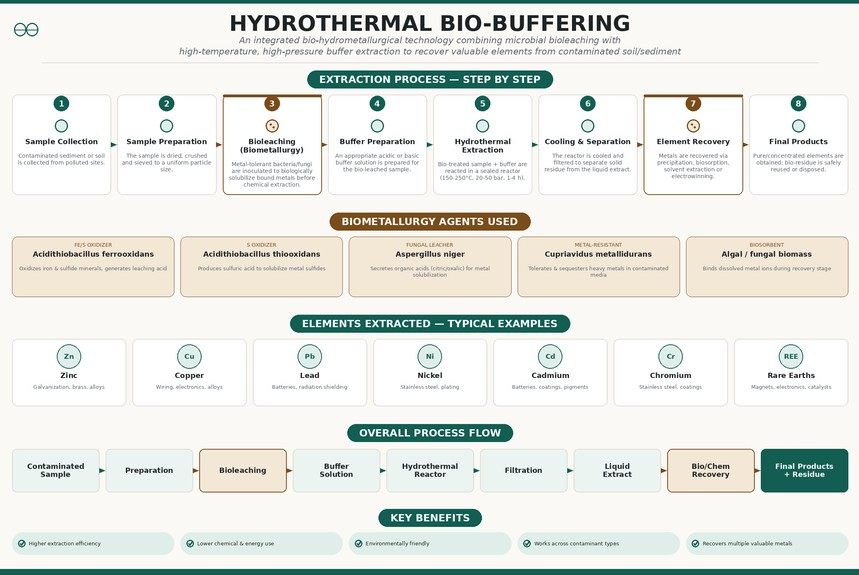

Title: Hydrothermal Bio-Buffering — Integration of Biometallurgy

Figure 1 illustrates the updated hydrothermal buffering process with biometallurgy (bioleaching) integrated as a new stage. The main objective of this update is to biologically pre-treat the contaminated sample using metal-tolerant microorganisms before the hydrothermal extraction step, reducing the chemical and energy load of the overall process. As shown in the figure, the process now flows through eight stages instead of seven — sample collection, sample preparation, bioleaching, buffer preparation, hydrothermal extraction, cooling & separation, element recovery, and final products — with the biological and chemical stages visually distinguished by color.
Changes made:
Added a new step — Bioleaching (Biometallurgy) — between sample preparation and buffer preparation, where metal-tolerant bacteria/fungi biologically solubilize bound metals
Renamed the process from "Hydrothermal Buffering" to "Hydrothermal Bio-Buffering"
Added biosorption as a new metal recovery method, alongside precipitation, solvent extraction, and electrowinning Added a new section listing 5 biometallurgy agents used and their function:
Acidithiobacillus ferrooxidans — oxidizes Fe/S minerals Acidithiobacillus thiooxidans — produces sulfuric acid for leaching Aspergillus niger — fungal leacher, secretes organic acids Cupriavidus metallidurans — metal-resistant bacteria
Algal/fungal biomass — biosorbent for recovery stage
Updated the overall process flow diagram to show bioleaching and bio/chem recovery as distinct stages Added a new benefit: "Lower chemical & energy use"
Redesigned the poster in a clean, minimalist single-accent-color theme
Onkar Shelke, 25102C2002 , Dept. of Computer Engineering, VIT